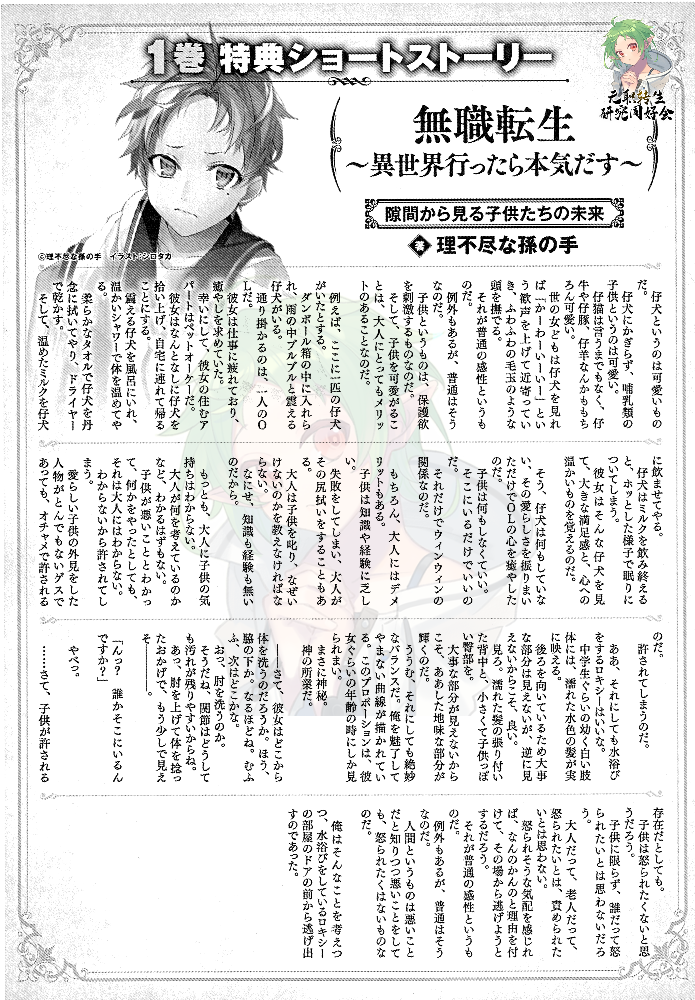

Volume 1 Bonus Short - The Future of Kids Who Peek Through the Gaps
PDF here - https://files.catbox.moe/5li4sz.pdf

A puppy is a cute thing. Not just the puppies, but all little ones of the mammal kind are cute. Kittens don’t have to be even mentioned, and of course, the calves, lambs, and piglets are cute too. If the girls of the world see a puppy, they raise a shout of joy going “CUUUUTE!” and approach them, rubbing the little furball-like head. That’s common sense. There are exceptions but that is how it normally goes. Children are things that stimulate one’s sense of protectiveness. There is also a kind of merit for adults in doting on children.
For example, let’s imagine a puppy. A puppy left inside a box and trembling in the rain. The one passing by is a single OL. Tired from her work, she was in search of healing. Luckily her apartment allows pets. She picks up the puppy for some reason or other and returns to her apartment with it.
She carefully wipes the puppy with a soft towel and dries it with a drier. Then she makes the puppy drink some warm milk. After the puppy completes drinking, it goes to sleep with a calm expression. Seeing this puppy, the lady will feel a sense of satisfaction and warmth in her heart.
As you see, the puppy didn’t do anything. Just from its cute behavior, it managed to heal the OL’s heart. And just like this, children don’t have to do anything. Their existence is enough. It’s a win-win situation for everyone with just that.
Of course, there’s also a demerit for the adults. Children lack knowledge and experience. Adults have to scold them and tell them why they shouldn’t be doing bad things like. Because children don’t have the knowledge or the experience.
That said, adults can’t know how children feel. They don’t have a way of understanding the child’s mind. Even if a child does something knowing it is bad, adults won’t realize it. And because they don’t know, they will excuse them. Even if the person with the appearance of a child is a creep, their actions will get excused as a mischievous prank.
Aah, keeping that aside, the bathing Roxy looks really good. Those immature, pale, middle-schooler-looking limbs really bring out the blue in her damp hair. Although I can’t see the important parts because she is turned away from me, it’s better this way. Look. The wet strands of hair stuck on the back and the child-like shoulders. It’s because the important parts are hidden that these solemn parts can shine bright. Umu, at any right, it’s an exquisite balance. Those body lines never stop to mesmerize me. You don’t get to see these proportions out of her’s age range. Truly a divine mystery. A god’s work to say.
Well then, let’s see where would she start to wash from first. Oh, under the armpits huh. I see, I see. Mufufu, I wonder what’s the next place going to be. Oh, she is going for the elbow. Yeah, I can understand, joints are easy to get dirt left behind in. Ahh, she twisted her body to wash the elbow, just a bit more and I can-------------.
“Nn? Is someone there?”
Oh, shit.
….now then, even if children will be forgiven, they would not want to get angered at. Leave children, no one will want to anger someone. Even adults and the elderly. No one wants to get angered at or scolded. If they feel like they are going to get scolded they use some excuse to escape from there. That’s common sense. There are exceptions, but that’s how it normally goes. Humans are creatures that don’t want to get angered at even while doing bad things knowing that they are bad.
With those thoughts, I took flight from the door of the room Roxy’s taking a bath in.